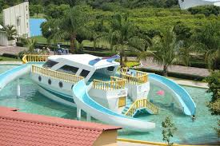

* PARQUE ACUATICO SAN CALOS
**Las tarifas de hospedaje ya incluyen tu entrada al parque!
Habitación........ $ 980 x 4 personas
Cabaña ............ $1200 x 4 personas
TARIFAS 2015
Temporada Alta: Sábados, Domingos, Días festivos, Semana Santa, temporada Vacacional y Puentes.
* Adultos..............................$90.00
* Niños ................................$60.00
* Menores de 90 cm. ..........GRATIS
* Campamento Adultos........$170.00
* Campamento Niños...........$110.00
Temporada Baja: Lunes a viernes, días comunes fuera de los puentes vacacionales y días festivos.
* Adultos..............................$80.00
* Niños ................................$60.00
* Menores de 90 cm. ..........GRATIS
* Campamento Adultos........$160.00
* Campamento Niños...........$110.00
* En nuestro Parque los niños pagan a partir de medir 90 a 130 cm.
* El boleto de Campamento ya incluye tu entrada al Parque y dura 24 hrs.
________________________
Para una diversión a lo grande, disfruta de todas las áreas!
Zona Aqua - Sensacionales albercas y toboganes te esperan
Zona Peques - Diversión con juegos infantiles
Zona Extrema- Adrenalina al 100%: Gotcha, tirolesa y muro de escalada.
Zonas Camping- Disfruta una gran velada en la zona Nocturna o descansa en la zona de Silencio.
Zona Sport - Canchas de basquet ball.
Servicios del Hotel
Aceptamos Tarjeta de Crédito Actividades recreativas Aguas Termales
Alberca Bar Cabañas
Cafetería Cancha de tenis Canchas Deportivas
Estacionamiento de Autobuses Estacionamiento privado Farmacia
Jardines Juegos Infantiles Médico
Recepción 24 hrs. Restaurante Tienda
Transporte Vigilancia
Para brindarte un cómodo descanso ponemos a tu disposición cómodas cabañas y habitaciones equipadas.
RESERVA con al menos 15 días anticipación!
CABAÑA
* Dos camas matrimoniales
* Baño con regadera
* Sala
* Comedor
* Cocineta
* Cocineta
* Refrigerador
* TV a color
No incluye utensilios de cocina
HABITACIONES
Todas las habitaciones cuentan con baño con regadera y TV a color
Habitaciones 1, 2, 3 y 4:
Dos camas matrimoniales.
Habitaciones 5, 6, 7, 8 y 9:
1 cama matrimonial y 1 litera con 2 camas individuales
Habitaciones 10 -
________________________
TARIFAS HOSPEDAJE SAN CARLOS 2015
* Cabaña...............$1200.00.........4 adultos
* Habitación...........$ 980.00.........4 adultos
( Incluye 4 entradas al Parque)
PERSONA EXTRA
$170.00...........Adulto
$110.00...........Niño
POLITICAS DE RESERVACION
* Las reservaciones se hacen de preferencia con 15 días de anticipación (a mas tardar una semana) con un depósito de $500.00 pesos.
* Una vez en el Parque debe dejar un depósito de $200.00 y una identificación oficial (IFE).
* Todas las Habitaciones y Cabañas se entregan a las 3:00 pm. Al día siguiente deberá desocuparlas a las 12:00 pm y puede permanecer en el parque hasta las 6:00 pm
* En caso de no desocupar la habitación o cabaña a las 12:00 pm se le cobrará un cargo de $200.00
Servicios en las Habitaciones
Aire Acondicionado Sala de estar Cocineta Terraza
Pantalla LCD/ Cable Baño c/agua caliente Ventilador
Tarifas
Habitacion 4 pax Cabaña 4 pax
980.00 1200.00
Dirección Ojo del Carbón :
Km. 15 Carr. Ayotlicha S/N Col. Las Palmas Tlapanala, Pue
Visita el : Sitioweb Ojo del Carbón
Horario : Los 365 días del año de 8:00 a 21:00 hrs

* BALNEARIO OJO DEL CARBON *
En este balneario te divertiras y pasaras
momento agradable en familia, amigos y mas
este balneario cuenta con albercas, toboganes
y un criadero de mojarras donde podras divertirte
el balneario ojo del carbon se encuentra ubicado en
Km. 15 Carretera Izúcar de Matamoros Tlapanalá S/N
N/A
Izúcar de Matamoros
Teléfono: Tel. 01 244 44 25 388
México
Puebla

LAGUNA SAN JUAN EPATLAN
En la vida hay historias que parecen increíbles,
como es el caso de la laguna de San Juan Epatlán.
Hay historias y leyendas que se van transmitiendo de
generación en generación. Los primeros pobladores en esta
región fueron los olmecas, madre de todas las culturas que
existieron en territorio mexicano hace 3,500 años. Se hace esta
aseveración, por la infinidad de piezas arqueológicas de horizonte
preclásico que se han encontrado en el municipio de Epatlán.
Por lo tanto tiene aproximadamente 3,500 años que ya había habitantes
en esta región, los asentamientos humanos fueron bastante considerables,
como lo demuestra la gran cantidad de maravillosas piezas arqueológicas
descubiertas en este lugar, y que se encuentran en colecciones particulares
en los museos nacionales y en particular, el Museo Nacional de
Arqueología e Historia, de la Unidad Escolar Particular, Miguel Cástulo
de Alatriste en Izúcar de Matamoros, donde se exhiben para todo el público,
vestigios arqueológicos de las diferentes culturas que existieron en esta región.